Heads up! This is very much a work in progress. As time permits I will put more things up here.
Physics 2501 fulfills the advanced laboratory requirement at the University of Connecticut. It’s a really fun class, but at times can be pretty hellish. If you’ve taken it you know what I mean.
In the fall of 2019 I made python scripts, CAD models, and developed a LaTeX (.tex) file as part of this class. I share them here, and hope you can put them to use.
This goes without saying but don't steal any of my words / raw data. You can use the figures as long as you cite me.
I now present the labs in the order I had them.
One of the easier labs. Here are two diagrams made in autocad:
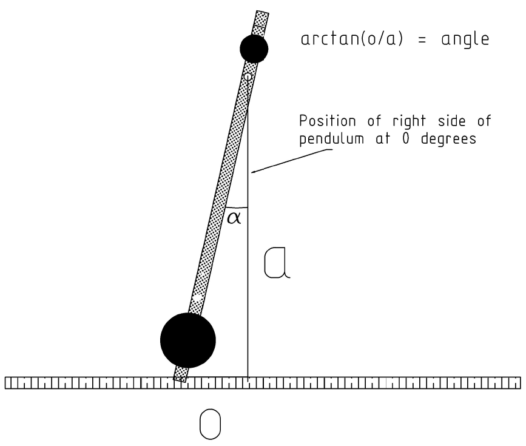 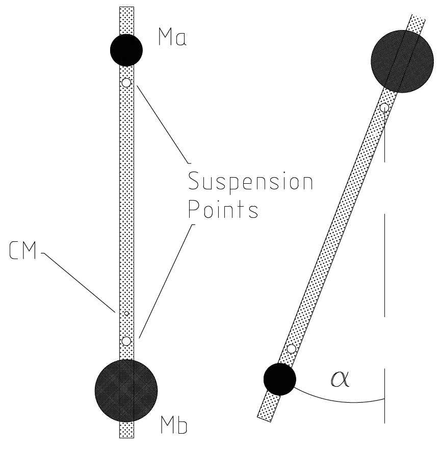And now here are some of the figures I made along with the code used to generate them.
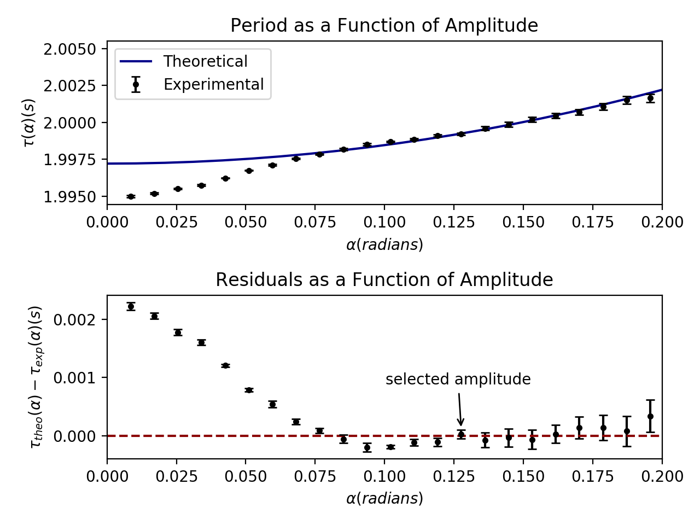
#Stephen Duncanson
#Figures for Kater's Pendulum
import matplotlib.pyplot as plt
import numpy as np
#First I want the ones for the period as a function of amplitude
#three matplotlib figures in 1 here.
#x exp vs x theoretical residuals
#sum of residuals vs t,a=0
#residuals for each datapoint vs amplitude
#x
amp_radians= [0.00851,0.01702,0.02553,0.03404,0.04255,0.05106,0.05957,0.06808,0.07659,0.0851,0.09361,0.10212,0.11063,0.11914,0.12765,0.13616,0.14467,0.15318,0.16169,0.1702,0.17871,0.18722,0.19573,0.20424,0.21275]
#y
avg_period = [1.994998108,1.995188811,1.9955177,1.995749964,1.99622979,1.996752662,1.997113687,1.997547757,1.997856185,1.998173117,1.998504238,1.998703413,1.998859658,1.999095789,1.999221036,1.999601439,1.99986062,2.000208032,2.00044816,2.000692757,2.001063693,2.001510966,2.001656021,2.00192951,2.002376069]
#error bar
std_dev = [6.57803E-05,5.38924E-05,5.24567E-05,4.53188E-05,2.2464E-05,2.86997E-05,5.72159E-05,4.73891E-05,4.24313E-05,7.0427E-05,7.66259E-05,2.93412E-05,5.76247E-05,6.94046E-05,7.4178E-05,0.00012442,0.000153882,0.000164308,0.000157059,0.000186293,0.000216577,0.000260444,0.00027861,0.000311506,0.000316211]
#s
step = 0.01
t_0 = 1.997213201
resids = []
for i in avg_period:
resids.append(t_0*(1+(float(amp_radians[avg_period.index(i)])**2)/16)-i)
print(resids)
a=[]
b=[]
b2 = []
# y=0
# x=-50
xx = np.linspace(0,.25,25)
print(xx)
for x in xx:
y=t_0*(1+(float(x)**2)/16)
y2 = 0
a.append(x)
b.append(y)
b2.append(y2)
#x= x+1
fig = plt.figure()
fig1=fig.add_subplot(211)
fig2=fig.add_subplot(212)
axes = plt.gca()
fig1.set_xlim(0,.20)
fig2.set_xlim(0,.20)
fig1.set_title('Period as a Function of Amplitude')
fig2.set_title("Residuals as a Function of Amplitude")
fig1.plot(a,b,color='darkblue',label="Theoretical")
fig1.set_ylabel(r"$\tau (\alpha)(s)$")
fig1.set_xlabel(r'$\alpha (radians)$')
fig1.errorbar(amp_radians,avg_period,yerr=std_dev,fmt='k.',capsize=3,label="Experimental")
fig1.legend()
fig2.plot(a,b2,'--',color='darkred')
fig2.errorbar(amp_radians,resids,yerr=std_dev,fmt='k.',capsize=3)
fig2.annotate('selected amplitude',
xy=(0.12765, .0001), xycoords='data',
xytext=(-50, 30), textcoords='offset points',
arrowprops=dict(arrowstyle="->"))
fig2.set_ylabel(r'$\tau_{theo}(\alpha) - \tau_{exp}(\alpha) (s)$')
fig2.set_xlabel(r'$\alpha (radians)$')
#fig1.grid(True)
plt.tight_layout()
plt.show()
Here is the final figure, the intersection point obtained from the linear regression.
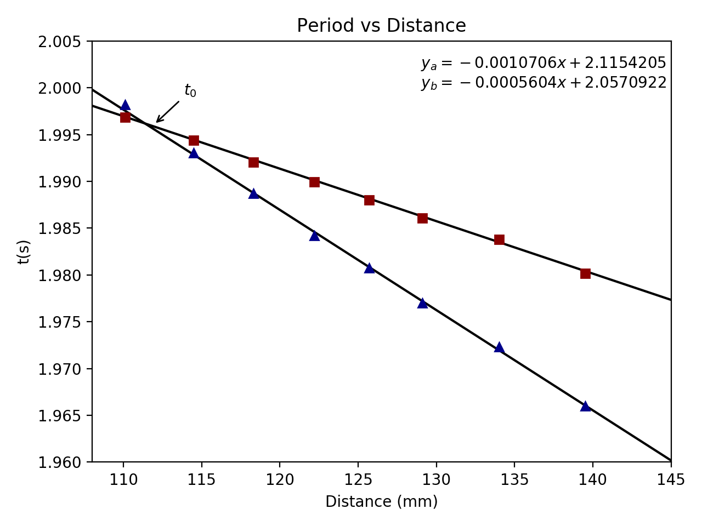Here is the code used (you'll have to edit the lists):
#Stephen Duncanson
#Figures for Kater's Pendulum
import matplotlib.pyplot as plt
import numpy as np
a_y_points = [1.998179081,1.993061421,1.988724253,1.984176232,1.980725415,1.977022316,1.972321442,1.966025746]
b_y_points = [1.996840031,1.994407305,1.992068208,1.989919355,1.988020578,1.98604652,1.983787038,1.980161939]
a_x_points = [110.1,114.5,118.3,122.2,125.7,129.1,134,139.5]
b_x_points = [110.1,114.5,118.3,122.2,125.7,129.1,134,139.5]
a_y_err = [0.000116358,5.28989E-05,0.000107986,5.09805E-05,8.73153E-05,3.75692E-05,4.38762E-05,8.75624E-05]
b_y_err = [3.0206E-05,4.56698E-05,2.77831E-05,4.39552E-05,3.30352E-05,5.46669E-05,3.63742E-05,2.8324E-05]
a_m = -0.001070626
a_b = 2.115420536
b_m = -0.000560443
b_b = 2.058600083
b_line = []
a_line = []
line_x = np.linspace(105,150,100)
for x in line_x:
y_b_line=b_m*x+b_b
y_a_line=a_m*x+a_b
b_line.append(y_b_line)
a_line.append(y_a_line)
plt.title("Period vs Distance")
plt.ylabel('t(s)')
plt.xlabel('Distance (mm)')
plt.text(129,2, "$y_{a}=-0.0010706x+2.1154205$\n$y_{b}=-0.0005604x+2.0570922$")
plt.plot(line_x,a_line,'k-')
plt.plot(line_x,b_line,'k-')
plt.plot(a_x_points,a_y_points,'r^',color='darkblue')
#plt.errorbar(a_x_points, a_y_points, yerr=a_y_err,ls='none',color='k',capsize=1)
plt.plot(b_x_points,b_y_points,'s',color='darkred')
#plt.errorbar(b_x_points, b_y_points, yerr=b_y_err,ls='none',color='k',capsize=1)
plt.axis([108, 145, 1.96, 2.005])
#plt.grid(linestyle='-', linewidth='.1', color='grey')
plt.annotate(r'$t_{0}$',
xy=(111.916, 1.996), #xycoords='data',
xytext=(20, 20), textcoords='offset points',
arrowprops=dict(arrowstyle="->"))
plt.tight_layout()
plt.show()
haha....ha...
This one I have a treat for you. If you can get my code working (and maybe fix the error in the chi squared) it will do the whole lab for you. Just make sure the required text file is in the directory and the code will do the rest.
Here are the best looking plots, all made with this code.
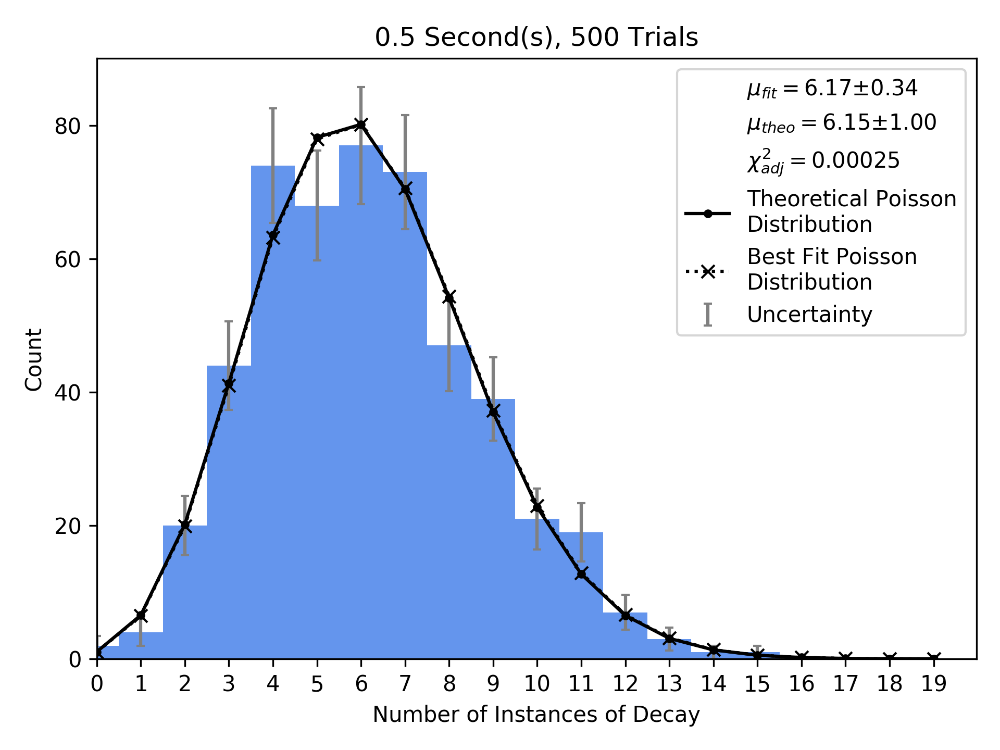 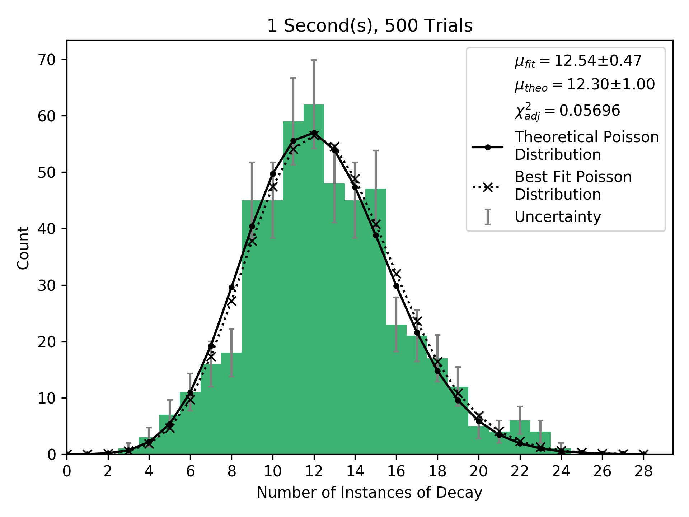 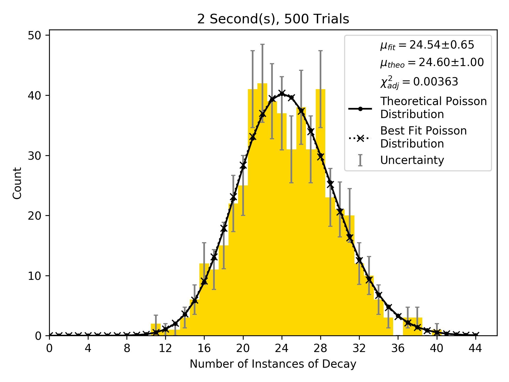 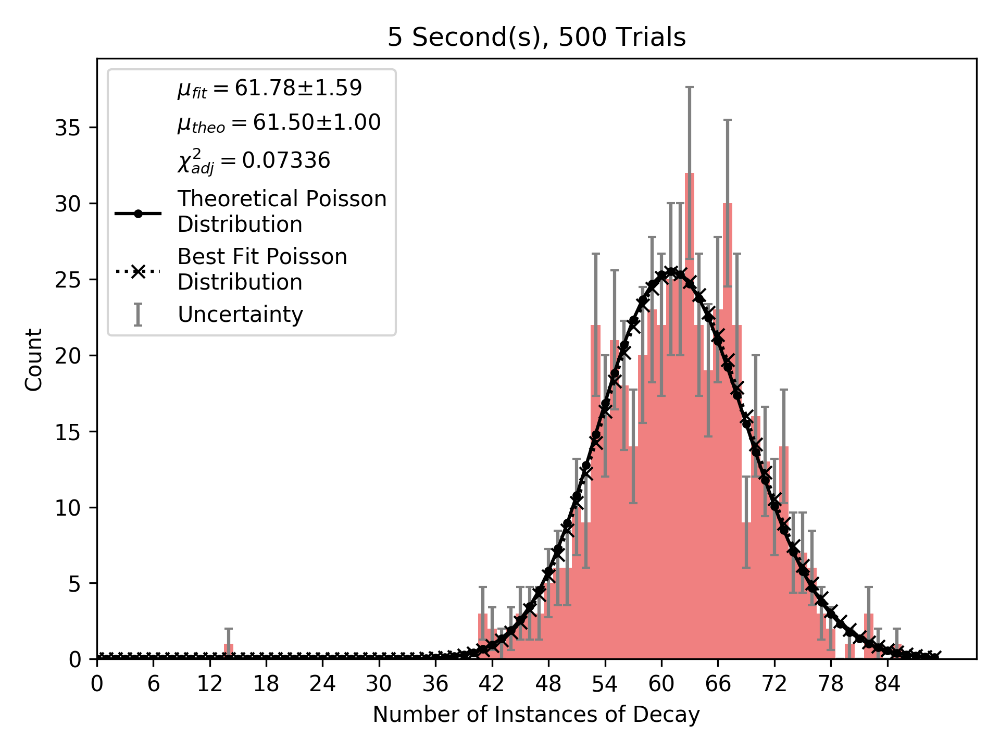Here is the code, it's a little cleaner than other labs. Good job Stephen.
#Stephen Duncanson
#Dying in 2501W Edition
import matplotlib.pyplot as plt
import numpy as np
from matplotlib import colors
from matplotlib.ticker import PercentFormatter
import math
from scipy.optimize import curve_fit
from scipy.stats import poisson
import statistics
import random
#COLOR INDEXES
#0 = .5s
#1 = 1s
#2 = 2s
#3 = 5s
#THINGS TO CHANGE
TIME = 5
COLOR_INDEX = 3
TRIALS = 500
#THINGS NOT TO CHANGE
TITLE = str(TIME)+" Second(s), "+str(TRIALS)+" Trials"
COLORS = ['b','g','y','r']
COLORS2 = ['cornflowerblue','mediumseagreen','gold','lightcoral']
XLABEL = "Number of Instances of Decay"
YLABEL = "Count"
LAMBDA = 12.3
#MU = LAMBDA * TIME
def poisson(k, lamb):
return (lamb**k/math.factorial(int(k)))*np.exp(-lamb)
def how_many(n,a_list):
#Takes a list and a number and returns how many times its in the list
total = 0
for i in a_list:
if i == n:
total+=1
return total
def white_strip(text):
new_text =""
for x in text:
if x != " ":
new_text+=x
return new_text
SAVE_FILE = white_strip(TITLE)+'.png'
source_file = open("s.txt","r")
count_list = []
count_uni = []
for i in source_file:
i = int(i.rstrip('\n'))
count_list.append(i)
if i not in count_uni:
count_uni.append(i)
count_uni.sort()
#plt.hist(count_list,bins=np.arange(max(count_uni)+3)-0.5,color=COLORS2[COLOR_INDEX])
entries, edges, _ = plt.hist(count_list,bins=np.arange(max(count_uni)+3)-0.5,color=COLORS2[COLOR_INDEX])
#mid = 0.5*(bins[1:] + bins[:-1])
#plt.errorbar(mid, n, yerr=1, fmt='none')
bin_centers = 0.5 * (edges[:-1] + edges[1:])
plt.errorbar(bin_centers, entries, yerr=np.sqrt(entries),ls='none',capsize=2,ecolor='grey',label='Uncertainty')
#plt.errorbar(count_list,,2)
x = [z for z in range(0,max(count_uni)+5)]
FIT_MU = statistics.mean(count_list)
RANGE = max(count_list) - min(count_list)
MU_ERROR = RANGE/(2*math.sqrt(len(count_list)))
#sEE: https://ww3.haverford.edu/physics-astro/course_materials/astr101a/Assignments/Error_Analysis.pdf
#print(FIT_MU)
#print(LAMBDA*TIME)
p = []
for r in x:
y = len(count_list)*poisson(r, LAMBDA*TIME)
#((LAMBDA*TIME)**r)/(math.factorial(r))*math.e**(-LAMBDA*TIME)
p.append(y)
p2 = []
for r in x:
y = len(count_list)*poisson(r, FIT_MU)
#((FIT_MU)**r)/(math.factorial(r))*math.e**(-FIT_MU)
p2.append(y)
uncertainties = {}
chi_squared = 0
TEST_MU = FIT_MU
for n in range(0,max(count_uni)):
#Uncertainty is scaled, See Alan's Email
SIGMA = how_many(n,count_list)/(sum(count_list))
uncertainties[n] = SIGMA
if SIGMA == 0:
chi_squared += 0
else:
chi_squared_term = (poisson(n, LAMBDA*TIME)-poisson(n, TEST_MU))**2/SIGMA
chi_squared += chi_squared_term
#print(chi_squared_term)
print(chi_squared)
#plt.scatter(0,0,label=r'an equation: $E=mc^2$')
plt.plot([], [], ' ', label=r'$\mu_{fit}=$'+str(format(FIT_MU,'.2f'))+'$\pm$'+str(format(MU_ERROR,'.2f')))
plt.plot([], [], ' ', label=r'$\mu_{theo}=$'+str(format(LAMBDA*TIME,'.2f'))+'$\pm$'+str(format(1,'.2f')))
plt.plot([], [], ' ', label=r'$\chi^{2}_{adj}=$'+str(format(chi_squared,'.5f')))
#print(p2)
#new way #COLORS[COLOR_INDEX]
plt.plot(x,p,'k.-',label="Theoretical Poisson\nDistribution")
#fit way
plt.plot(x,p2,'kx:',label="Best Fit Poisson\nDistribution")
#Set the Title, xlabel, and ylabel for the plot
plt.ylim(ymin=0)
plt.xlim(xmin=0)
if max(count_uni)+5 > 60:
plt.xticks(np.arange(0, max(count_uni)+5, step=6))
elif max(count_uni)+5 > 40:
plt.xticks(np.arange(0, max(count_uni)+5, step=4))
elif max(count_uni)+5 > 20:
plt.xticks(np.arange(0, max(count_uni)+5, step=2))
else:
plt.xticks(np.arange(0, max(count_uni)+5, step=1))
#COMPARE TO BINOMIAL?
plt.legend()
plt.title(TITLE)
plt.xlabel(XLABEL)
plt.ylabel(YLABEL)
plt.tight_layout()
plt.savefig(SAVE_FILE, dpi=300)
plt.show()
Very little to provide here. I used excel. Was pretty awful.
Really easy lab. Here are two figures are the code. Don't be crazy- just do the nonlinear fits in excel.
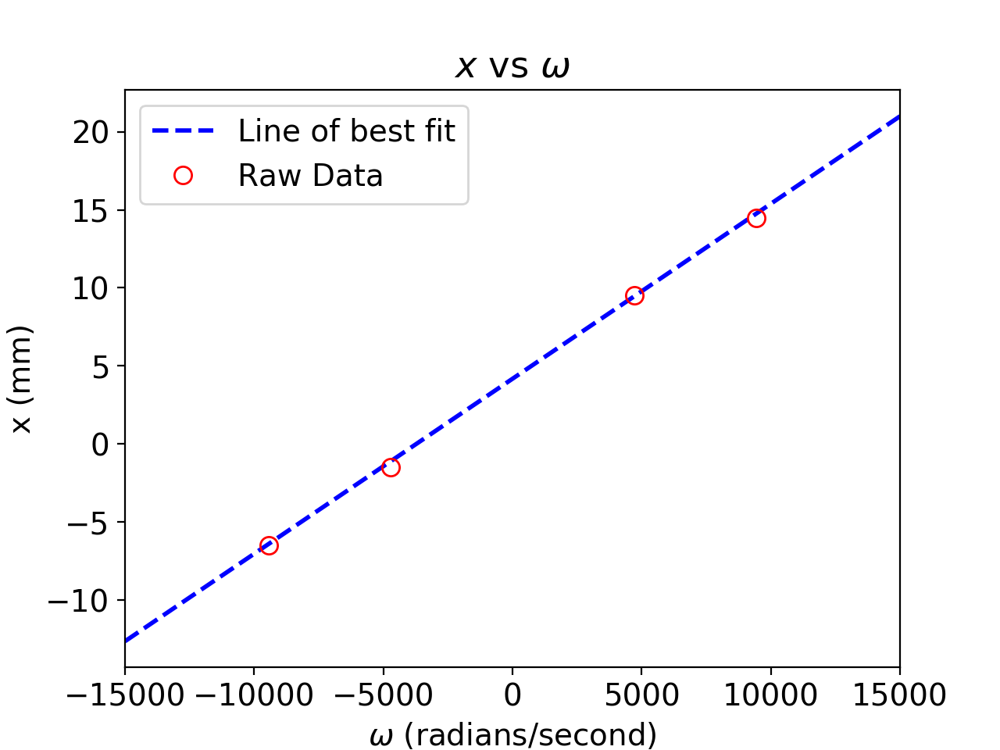 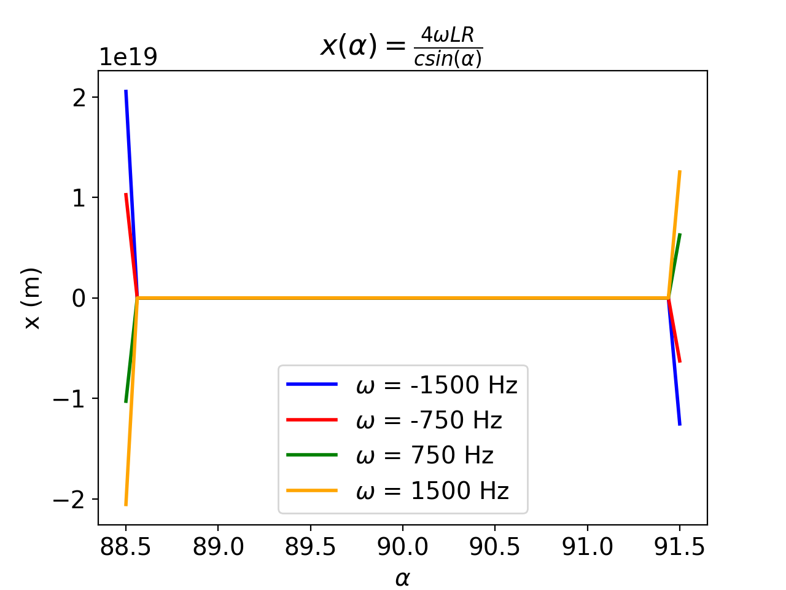
import matplotlib
import matplotlib.pyplot as plt
import numpy as np
plt.rc('font', size='14') # controls default text sizes
#Raw points
y_s = [-6.5,-1.5,9.5,14.5]
x_s = [-9424.777961, -4712.38898, 4712.38898, 9424.777961]
m = 0.001121188
b = 4.178018449
def fit_func(x):
return m*x+b
x_vals = np.linspace(-15000,15000)
#fit line:
y_fit = [fit_func(x) for x in x_vals]
plt.plot(x_vals, y_fit,color='blue',linestyle='dashed',linewidth="2",label="Line of best fit")
plt.plot(x_s,y_s,'ro',markersize="8",label="Raw Data",fillstyle="none")
plt.legend()
plt.xlim(-15000,15000)
plt.xlabel(r'$\omega$ (radians/second)')
plt.ylabel('x (mm)')
plt.title(r'$x$ vs $\omega$')
#plt.tight_layout()
plt.show()
L = 15.85
R = 5.298
freqs = [-1500,-750,750,1500]
delta = 1.5
small = 90-delta
big = 90+delta
alpha = np.linspace(small,big,50)
#print(alpha)
def x_func(alpha,omega):
return (4*omega*L*R)/((np.sin(2*np.pi*alpha)))
y_1s = [x_func(a,freqs[0]) for a in alpha]
y_2s = [x_func(a,freqs[1]) for a in alpha]
y_3s = [x_func(a,freqs[2]) for a in alpha]
y_4s = [x_func(a,freqs[3]) for a in alpha]
plt.plot(alpha, y_1s,color='blue',linewidth="2",label=r"$\omega$ = -1500 Hz")
plt.plot(alpha, y_2s,color='red',linewidth="2",label=r"$\omega$ = -750 Hz")
plt.plot(alpha, y_3s,color='green',linewidth="2",label=r"$\omega$ = 750 Hz")
plt.plot(alpha, y_4s,color='orange',linewidth="2",label=r"$\omega$ = 1500 Hz")
plt.legend()
plt.xlabel(r'$\alpha$')
plt.ylabel('x (m)')
alpha2 = []
plt.ticklabel_format(useOffset=False)
t = np.linspace(big, small, 200)
y = np.sin(t*np.pi*2)
plt.title(r'$x(\alpha) = \frac{4 \omega LR}{c sin(\alpha)}$ ')
plt.show()
Muon is also very easy. This code should give you a really nice decay curve with background term.
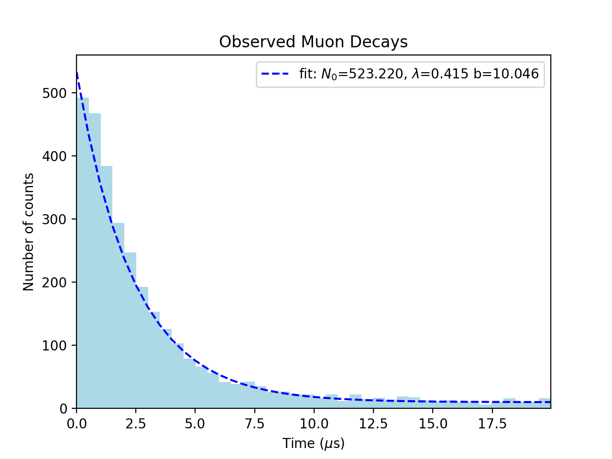 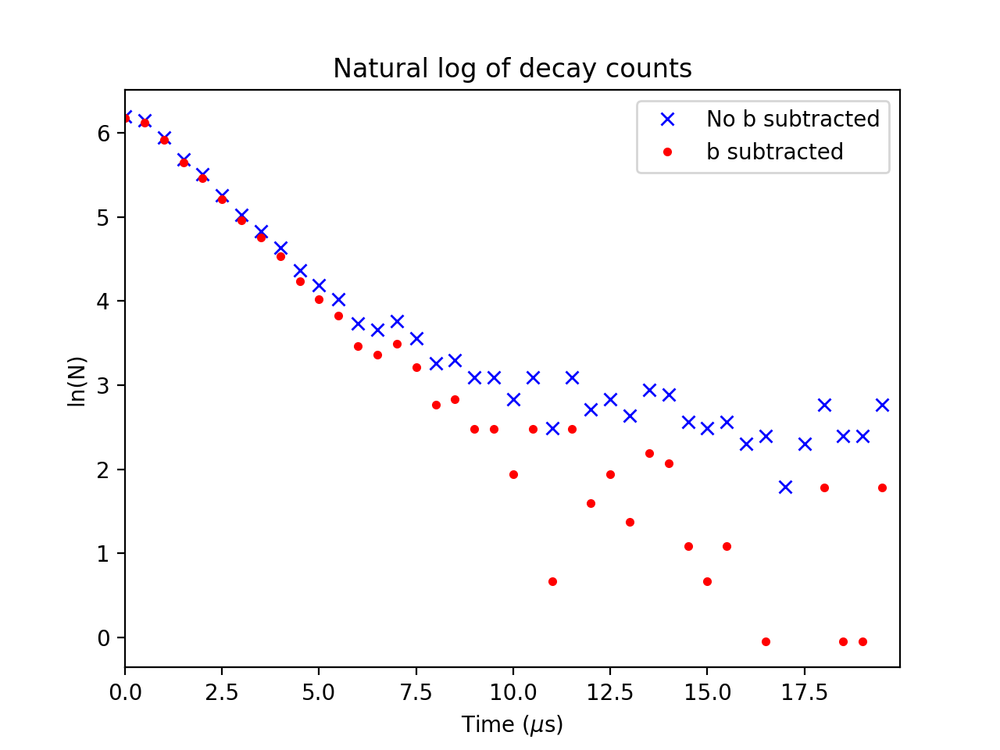The code is pretty simple and leaves a lot to be desired so please add things like maximum likelihood!
#stephen muon lab
#fall 2019
import numpy as np
import matplotlib.mlab as mlab
import matplotlib.pyplot as plt
import scipy, scipy.stats
from scipy.optimize import curve_fit
def exp_func(x,n,l,b):
''' x, n_0, lambda'''
return n*np.exp(-l*x) +b
ofile = open('r.txt','r')
raws = []
for line in ofile:
raws.append(float(line.rstrip('\n')))
num_bins = int(max(raws)+1)*2 #40 bins
n, bins, patches = plt.hist(raws, num_bins, facecolor='lightblue', alpha=1)
plt.xlabel(r'Time ($\mu$s)')
plt.ylabel('Number of counts')
plt.title(r'Observed Muon Decays')
plt.xlim(0, max(raws))
#get the x and y values for the hist
x_vals = np.linspace(0,20,41)
y_vals = []
for bar in patches:
y_vals.append(bar.get_height())
y_vals.append(1)
popt, pcov = curve_fit(exp_func, x_vals, y_vals)
o_y_vals = [exp_func(x, *popt) for x in x_vals]
chi2 = scipy.stats.chisquare(y_vals, f_exp=o_y_vals)
print(chi2[0]/(len(x_vals-2)))
#print(pcov)
plt.plot(x_vals, exp_func(x_vals, *popt), 'b--',
label=r'fit: $N_{0}$=%5.3f, $\lambda$=%5.3f b=%5.3f' % tuple(popt))
plt.legend()
plt.show()
b_term = popt[2]
#Get the straight line
x_vals = [x for x in x_vals]
y_vals.pop(-1)
x_vals.pop(-1)
log_y2_vals = [np.log(y-b_term) for y in y_vals]
log_y_vals = [np.log(y) for y in y_vals]
plt.xlim(0, max(raws))
plt.xlabel(r'Time ($\mu$s)')
plt.ylabel('ln(N)')
plt.title(r'Natural log of decay counts')
plt.plot(x_vals,log_y_vals,'bx',label='No b subtracted')
plt.plot(x_vals,log_y2_vals, 'r.',label='b subtracted')
plt.legend()
plt.show()